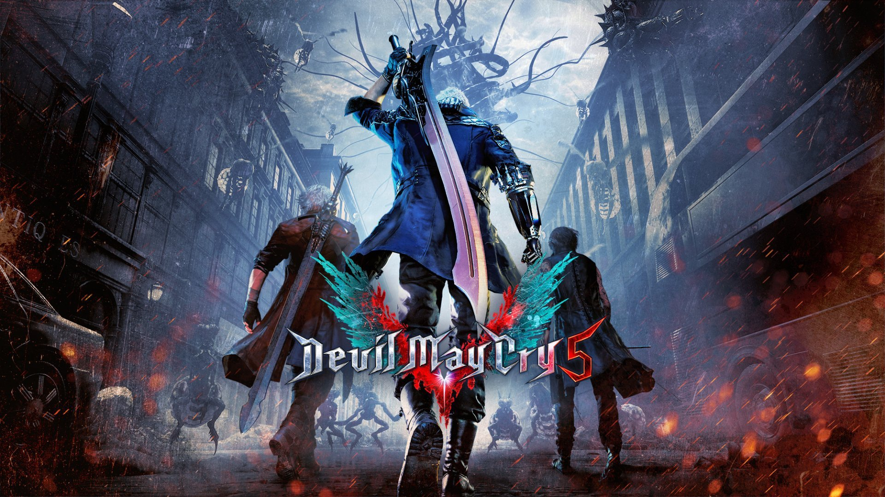
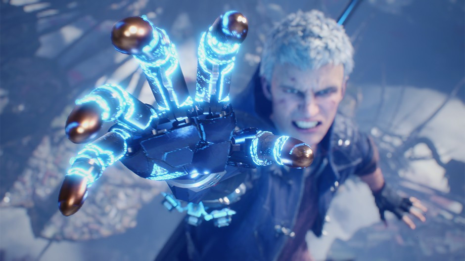

Devil May Cry 5

Devil May Cry 5 é um jogo eletrônico de ação-aventura hack and slash desenvolvido e publicado pela Capcom. É o quinto título principal da série Devil May Cry e foi lançado em 8 de março de 2019 para Microsoft Windows, PlayStation 4 e Xbox One. O jogo acontece cinco anos depois de Devil May Cry 4 e segue um trio de personagens com poderes demoníacos: Dante, Nero e um novo protagonista chamado V.
O jogo foi dirigido por Hideaki Itsuno, que pretendia fazer deste título o seu melhor trabalho. Ele pretendia tornar o jogo equilibrado tanto para os novatos quanto para os jogadores que retornavam, fornecendo uma dificuldade adequada e novos demônios. A Capcom também queria trazer um design mais realista inspirado no motor gráfico "RE Engine" fornecido em seu trabalho anterior, Resident Evil 7: Biohazard. Como resultado, os modelos foram usados para criar os rostos dos personagens. O enredo foi escrito pelo escritor Bingo Morihashi, enquanto o cenário foi baseado em vários locais de Londres. Vários compositores trabalharam juntos na produção da trilha sonora do jogo, criando três temas principais centrados em torno dos personagens jogáveis.
Devil May Cry 5 recebeu críticas positivas, com muitos descrevendo-o como um retorno triunfal para a franquia, elogiando a variedade de técnicas que os três personagens trazem, com V destacando-se graças ao seu estilo distinto de jogabilidade. O enredo foi considerado atraente, mas alguns analistas ainda achavam que era muito extravagante para os novatos. O jogo vendeu mais de 2 milhões de cópias em menos de um mês após o seu lançamento.
Jogabilidade
A jogabilidade em Devil May Cry 5 é semelhante aos outros títulos da série Devil May Cry, concentrando-se em um combate de "ação elegante" em um ritmo acelerado. O jogador luta contra hordas de demônios com uma variedade de ataques e armas e recebe uma avaliação de estilo em combate com base em vários fatores, como variedade de movimentos, a duração de uma combinação e ataques desordenados. A música no jogo muda com base no desempenho do jogador em combate.
Nero é equipado com sua espada Red Queen, seu revólver Blue Rose de cano duplo e uma variedade de novos braços robóticos chamados Devil Breakers, com uma variedade de funções como agarrar inimigos à distância ou parar para congelar um inimigo no local. Junto com sua lâmina de assinatura, a Rebellion, e a espada demoníaca Sparda, Dante foi mostrado usando dois novos Devil Arms, um par de armas que combinam com uma motocicleta chamada Cavaliere, e um conjunto de manoplas e botas de fogo chamadas Balrog. Além disso, Dante também usa o Cerberus, introduzido em Devil May Cry 3. O terceiro personagem jogável, V, é mostrado empunhando uma bengala e um livro. Durante uma entrevista, a Capcom decidiu não divulgar exatamente como V luta ainda, embora tenha provocado que o combate de V seria completamente diferente da de Nero e Dante. No trailer do jogo, apresentando no The Game Awards 2018, é revelado que V usa três demônios baseados em inimigos do primeiro jogo para lutar, incluindo Griffon, uma águia que usa ataques à distância, Shadow, uma pantera que forma lâminas, picos e portais fora de seu corpo, e Nightmare, um grande golem que V entra em um estado parecido com o Devil Trigger, que transforma seu cabelo branco, para convocar, que usa uma combinação de ataques corpo a corpo e raios laser.
História
A história se passa cinco anos após os eventos de Devil May Cry 4, com Nero montando sua própria agência de caça a demônios baseada em uma van adornada com um letreiro em neon de "Devil May Cry" que Dante deu a ele com apoio de Kyrie e sua engenheira, Nico. Mas em 30 de abril, Nero encontra um demônio agonizando que arranca seu braço, Devil Bringer e o transforma no Devil Arm Yamato para abrir um portal para escapar. Poucos dias depois, um homem conhecido como "V" chega ao escritório do Devil May Cry a fim de contratar Dante, Lady e Trish para matar um certo demônio retornado. O grupo chega a Red Grave City em 16 de maio, cruzando caminhos com Nero, pois eles compartilham o mesmo alvo: um demônio chamado Urizen que plantou uma árvore demoníaca chamada Qliphoth na cidade, que está matando pessoas por seu sangue. O grupo reunido tenta atacar Urizen juntos, mas o demônio domina todos eles com Dante, tendo V levando Nero em segurança. Com sua espada Rebellion quebrada por Urizen, Dante é forçado a usar a Espada de Sparda, mas é facilmente derrotado e expulso do Qliphoth. Urizen então captura Lady e Trish, transformando-as em núcleos para os demônios Artemis e Cavaliere Angelo.
Um mês depois, em 15 de junho, Nero retorna ao Red Grave depois de ser equipado com o braço protético "Devil Breaker" que Nico fez para ele. Nero se encontra com V depois de derrotar o demônio Golias, que está buscando Qliphoth por seu fruto, nascido de sangue humano condensado, o que faz com que quem o consuma se torna o rei do submundo. Enquanto a dupla destrói as raízes de Qliphoth enquanto procura por Dante, Nero derrota Artemis para resgatar Lady enquanto V mata o demônio-parasita Nidhogg, liberando acidentalmente a construção de raiz Gilgamesh que então vai atrás de Nero. V se junta a Nero depois de aprender que outro demônio chamado Malphas também está atrás da fruta de Qliphoth enquanto busca o Sparda com medo de que os descendentes de seu homônimo o adquiram. V e Nero dividem-se para encontrar o Sparda primeiro e descobre-o junto com um Dante em hibernação, cuja presença estava sendo escondida pela espada.
Depois que Dante descobre o que aconteceu durante seu cochilo de um mês, ele luta contra Cavaliere Angelo e liberta Trish ao longo do caminho. V então revela a Trish que Urizen é na verdade o lado demoníaco do irmão de Dante, Vergil, que usou o poder de Yamato para separar seu metade demônio e metade humano, o último manifestado como o próprio V com seu corpo agora no limite. Dante, tendo ouvido a história completa ao conhecer V, deduz que o poder de Rebellion é o oposto quando ele viaja o remanescente de sua casa de infância. Percebendo por que seu pai lhe deu a Rebellion, Dante se apunhala com o punho da espada quebrada para absorver Sparda em si mesmo, adquirindo sua forma Sin Devil Trigger junto com seu próprio Devil Sword Dante. Nero tenta confrontar Urizen novamente, mas é dominado mais uma vez, com Dante chegando a tempo de salvá-lo. Dante ganha vantagem com seus novos poderes até que Urizen se despede quando o Qliphoth começa a dar frutos. Enquanto Dante está em conflito por ter Nero se juntando a eles, V insiste para os três se separarem para encontrar seu próprio caminho para Urizen. Dante chega primeiro e derrota o King Cerberus antes de enfrentar Urizen, tendo agora comido a fruta de Qliphoth. Enquanto isso, depois de salvar V de Malphas, Nero descobre a história de Dante com Vergil. Ele e V chegam a Dante exatamente quando ele derrota Urizen, mas V intervém e se funde com Urizen antes que Dante possa terminá-lo, revivendo Vergil mais uma vez.

Dante ataca o recém-revivido Vergil, que o domina rapidamente antes de abrir um portal para o topo da árvore Qliphoth, dizendo a Dante para recuperar sua força total antes de voltar a lutar. Nero insiste em ir atrás do próprio Vergil para buscar respostas por perder o braço. Mas Dante, sabendo que ele era o tio do jovem caçador de demônios desde que se conheceram em Fortuna, finalmente revela a Nero que ele é o filho de Vergil e manda-o embora para manter suas mãos limpas de matar seu próprio pai. Nero, Nico, Lady e Trish escapam da Qliphoth, que se expande lentamente, mas, apesar do grupo insistir para que ele não enfrente seu pai, Nero, irritado e confuso, volta a perseguir Vergil.
Dante luta por seus familiares agora independente antes de chegar a Vergil e os filhos de Sparda se envolverem em outro duelo entre eles, durante o qual Dante diz a Vergil que Nero é seu filho. Após uma ligação com Kyrie, Nero expressa suas emoções conflitantes por ter encontrado sua família e não ter forças para salvar o irmão de Kyrie, Credo, anos atrás. Kyrie convence Nero a manter seus instintos, e o jovem caçador de demônios resolve salvar seu pai e seu tio de se matarem. Nero chega bem a tempo de deter Dante e Vergil quando sua luta atinge seu clímax, despertando totalmente seu Devil Trigger enquanto regenera seu braço direito. Vergil zomba da resolução de seu filho de uma solução pacífica enquanto ele decide lutar contra ele, mas se vê empurrado para trás até que ele a contragosto concede. Dando o livro de V pro Nero para lembrá-lo, Vergil se junta a Dante em uma viagem de ida para o Submundo para cortar o Qliphoth e selar o portal antes que ele separe a Terra.
Quando o Qliphoth cai, Nero deixa a Red Grave City ao lado de Nico enquanto remove demônios espalhados pelo caminho. Semanas depois, Trish e Lady são contratadas para um novo emprego por Morrison, que Dante deixa no comando de seu escritório. No Mundo Inferior, Dante e Vergil duelam uns contra os outros interminavelmente, devido a serem igualmente equilibrados e a constante interferência de demônios para matá-los, apesar de sua rivalidade parecer estar em termos mais amigáveis.